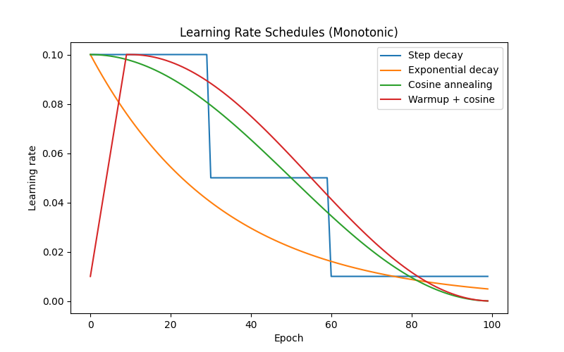

12 · LR Schedules
Decrease the learning rate over training
Schedule
Formula & notes
Constant
ηt = η0 — baseline, no decay
Step decay
ηt = η0 · γ⌊t/s⌋ — drop by γ every s epochs
Exponential decay
ηt = η0 · γt — smooth continuous reduction
Cosine annealing
ηt = ηmin + ½(η0 − ηmin)(1 + cos(πt/T))
Warmup + cosine
Linear ramp for tw steps, then cosine decay — essential for transformers
